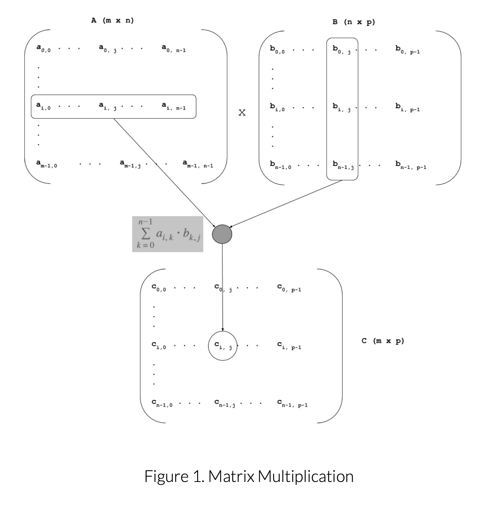

From Storage to Algorithms
In the last module, we implemented a Matrix<T> class using a
vector of vectors as the internal data store and a Sparse_Matrix<T>
class using a vector of linked lists.
The sparse representation let us save space for matrices made up primarily of a default value. This week, we extend that work by implementing efficient matrix multiplication for both dense and sparse matrices.
Why the Representation Matters
A dense matrix stored as a vector of vectors makes row access straightforward and predictable. A sparse matrix stored as linked lists can avoid wasting work on default entries, but only if our algorithm is designed to take advantage of that sparsity.
Matrix<T>
Dense storage favors direct indexed access and simple row-by-column multiplication logic.
Sparse_Matrix<T>
Sparse storage can save both space and time, provided we avoid iterating over entries that do not meaningfully contribute to the result.
That means the same mathematical operation, matrix multiplication, may call for different implementation strategies depending on how the matrix is stored.
Computing One Entry of the Product
To compute a single entry in the product matrix, we combine one row from the left matrix with one column from the right matrix. That row-by-column interaction is the heart of matrix multiplication.
